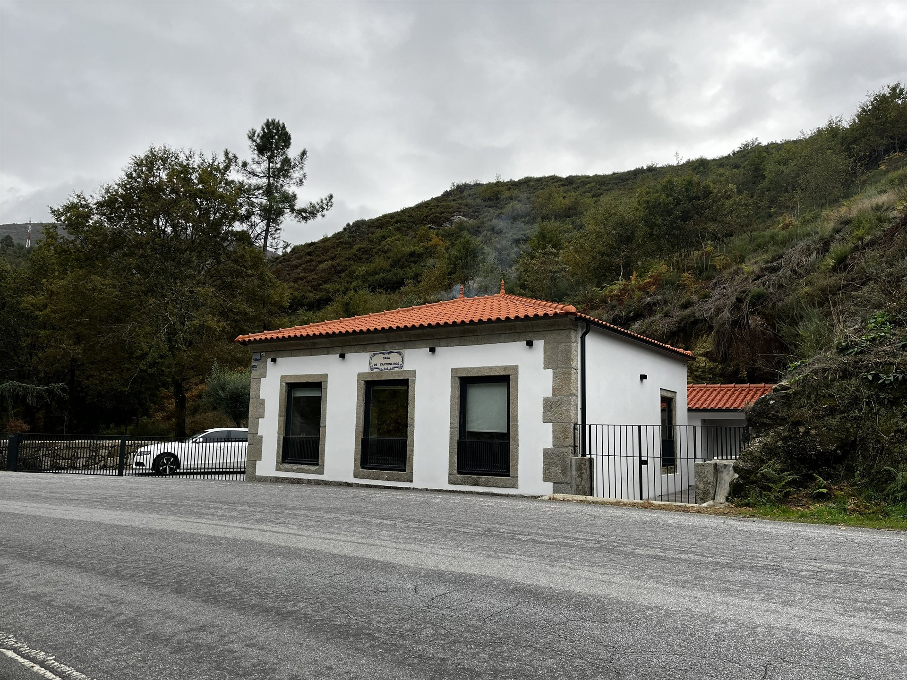

A Casa que Acolheu Histórias e Ganhou Nova Vida
A Casa de Cantoneiros nasceu nos anos 40 com uma missão simples e fundamental: dar abrigo aos cantoneiros, os homens responsáveis por manter abertas e seguras as estradas da nossa região. Mais do que um posto de trabalho, este espaço tornou-se um verdadeiro lar, acompanhando rotinas, memórias e gerações.
Aqui viviam as famílias destes trabalhadores, cuidando das vias que ligavam as aldeias e aproximavam as pessoas. Era uma vida simples e exigente, feita de sol a sol, fundada num conhecimento profundo da terra e num forte sentido de comunidade.
Em 2023, decidimos dar início a um novo capítulo e restaurar a casa com enorme carinho. Mantivemos a pedra em destaque e preservámos as vigas de madeira originais para que a alma do edifício permanecesse viva. Hoje, a casa está pronta para receber quem procura um refúgio com história.
A Nossa Jornada
Os marcos importantes na história da Casa de Cantoneiros.
Construção da Casa
A Casa de Cantoneiros é construída pela Junta Autónoma de Estradas para alojar os trabalhadores de manutenção rodoviária e as suas famílias.
Expansão da Família
A casa chega a alojar três famílias de cantoneiros simultaneamente. O jardim é cultivado com hortaliças e árvores de fruto.
Mudança de Função
Com a modernização das estradas, a casa deixa de ser usada para o seu propósito original. Permanece vazia durante vários anos.
Projeto de Restauração
Início do projeto de restauração com o objetivo de transformar a casa em turismo rural, preservando as características originais.
Inauguração
Após um longo trabalho cuidadoso, a Casa de Cantoneiros abre as portas como alojamento de turismo rural.
Primeiros Hóspedes
Recebemos os nossos primeiros hóspedes com todo o carinho e dedicação, prontos para tornar este espaço num refúgio de eleição no turismo rural da região.
A Nossa Missão e Valores
Os princípios que nos guiam no dia a dia.
Hospitalidade Autêntica
Recebemos cada hóspede como um amigo, com genuíno carinho e atenção aos detalhes.
Sustentabilidade
Cuidamos da natureza que nos rodeia e preservamos o património com práticas ecológicas no nosso dia a dia.
Qualidade
Dedicamos a máxima atenção a cada pormenor, do conforto dos quartos ao acolhimento de quem nos visita.
Comunidade
Valorizamos o que é nosso: apoiamos os produtores locais e partilhamos o melhor das tradições da nossa região.
As Nossas Tarifas
Preços transparentes para planear a sua escapadinha.
Época Baixa
Outubro a Maio
130€ / noite
Época Alta
Junho a Setembro
150€ / noite
Promoção Especial
Estadias de 1 semana (ou mais)
10% desconto